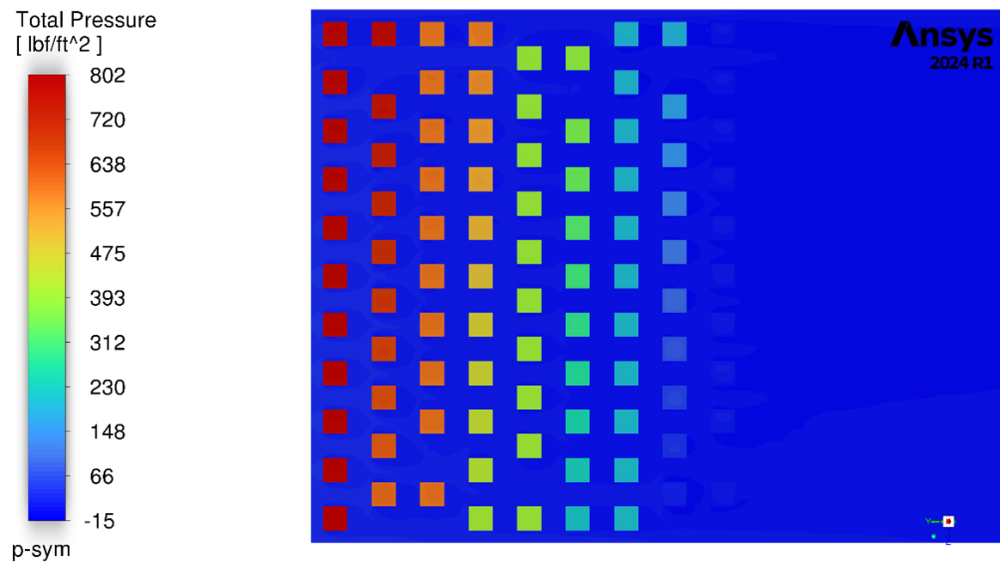
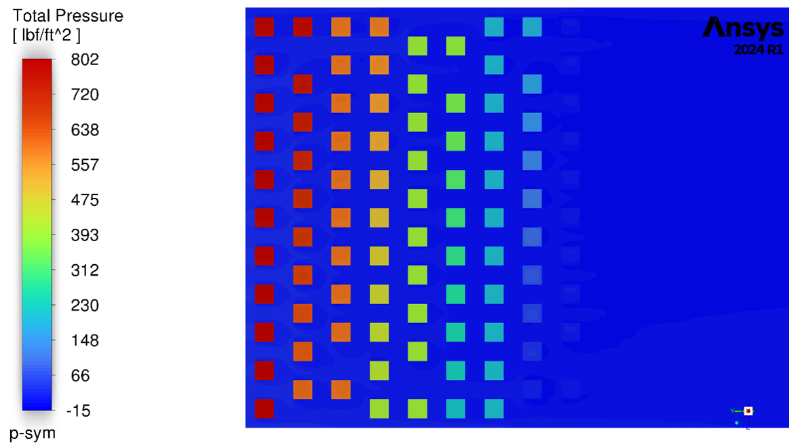

Spencer Kirsch: Mechanical Engineering Portfolio
Computational Fluid Dynamics Projects
Automotive Oil Heat Exchanger
Setup
- Modeled in Ansys Fluent as a crossflow heat exchanger with internal oil flow and perpendicular air flow.
- Designed for compact engine oil cooling
- Oil and air inlets defined as velocity boundaries with pressure outlets.
- Mesh was hex-dominant with local refinement around tube walls for heat transfer accuracy and y+ optimization.
- Steady-state pressure-based solver using the k–ε turbulence model.
- Oil inlet temperature: 350°F, Air inlet: 110°F
- Oil flow rate: 6 gpm, Air velocity: 27 mph
Results
- Oil outlet temperature reached 271°F, removing approximately 28 Btu/s of heat
- Increasing the tubing length by 1.5–2× would reduce oil outlet temperature to around 240°F while maintaining compactness
- Oil and Air pressure drop measured 5.5 psi and 0.18 psi respectively
- Flow fully developed across the exchanger with no significant recirculation zones
- Air outlet temperature reached about 139°F
- Compact form factor (10 × 6 × 3 in) satisfied packaging limits while providing good scalability
Geometry and Design
Initial duct layout for oil and air channels
Finalized crossflow heat exchanger geometry
Meshing and Model Setup
 Duct meshing and boundary layer refinement
Duct meshing and boundary layer refinement
 Heat exchanger overall mesh configuration
Developed flow mesh region
Heat exchanger overall mesh configuration
Developed flow mesh region
 Final tubing mesh refinement
Final tubing mesh refinement
 Cross section of tube mesh
Cross section of tube mesh
 Mesh aspect ratio in pipe section
Mesh aspect ratio near oil inlet
Mesh aspect ratio in pipe section
Mesh aspect ratio near oil inlet
Flow and Thermal Results
Temperature contour showing oil-to-air heat transfer
 Pressure distribution through inlet and outlet ducts

Symmetric pressure field across heat exchanger core
Velocity vector field at symmetry mid-plane
Pressure distribution through inlet and outlet ducts

Symmetric pressure field across heat exchanger core
Velocity vector field at symmetry mid-plane
 Air outlet temperature across exchanger length
Air outlet temperature across exchanger length
 Oil outlet temperature distribution
Oil outlet temperature distribution
Axial Air Compressor
Designed and simulated a multi-stage axial compressor capable of achieving a 20:1 pressure ratio at 40,000 ft.
Simulations were performed in ANSYS Fluent using detailed stage-by-stage geometry and validated at both altitude and sea-level conditions.
Design Constraints
- Pressure ratio: 20 : 1
- Maximum RPM: 50,000
- Altitude: 40,000 ft
- Outer diameter: 5 – 6 ft
Results
- Achieved total 20 : 1 compression ratio across 17 stages
- Average Stage efficiency 82%
- Convergece of Stable flow, Temperature, and convergence at all operating conditions
- Efficiency validated against analytical predictions
- Turbulence modeling, residual analysis, and mesh verification
Setup and Simulation Details
- Modeled and simulated in ANSYS Fluent, with each stage analyzed independently.
- Outlet conditions of each stage used as inlet conditions for the next.
- Pressure-based transient solver in double precision with periodic rotor–stator interfaces.
- Mesh: patch-conforming, 0.5 in body sizing, 3 inflation layers (1.2 growth rate), adaptive level 7.
- Max aspect ratio ≈ 10, min element quality ≈ 0.14.
- Operating pressure: 0 psi; inlet total pressure: 2.73 psi; total temperature: –19.9 °F.
- Spool-up sequence:
- 1000 rpm, Δt = 1×10⁻⁴ s, 300 steps
- 2000 rpm, Δt = 5×10⁻⁵ s, 300 steps
- 2500 rpm, Δt = 5×10⁻⁵ s, 960 + 480 steps (steady state)
- Achieved good convergence of residuals
Concept and Geometry
Initial Hand calcs
 Axial compressor assembly model in Onshape — Translucent Shroud
Axial compressor assembly model in Onshape — Translucent Shroud
 First Stages CAD detail Translucent Shroud
Cross Section View
Top View
First Stages CAD detail Translucent Shroud
Cross Section View
Top View
Stage 1
Stage 1 pressure contour during operation
Stage 1 temperature during operation
Stage 1 velocity streamlines during operation
Stage 1 mesh with boundary layer with aspect ratio color gradient
 Stage 1 mesh with element quality displayed.
Stage 1 mesh with element quality displayed.
Stage 4
Stage 4 pressure contour during operation
Stage 4 temperature during operation
Stage 4 velocity pathlines during operation
Finite Element Analysis Projects
Wind Turbine Structural Analysis
Ansys mechanical simulation of a wind turbine tower assembly under normal and extreme wind and thermal conditions. The objective was to determine the structural response, focusing on bolt stress, flange deformation, bending, and overall stability at the base connection.
Design Constraints
- Tower height: 525 ft
- Outer diameter (base): 40 ft
- Material: structural steel (E = 29,000 ksi)
- Normal Loading Case: 15 mph wind, ambient 75 °F
- Extreme Loading Case: 100 mph wind, ambient 32 °F
- Factor of safety target: ≥ 2.0
Results
- Peak Von Mises stress occurs near bolt holes on the baseplate under extreme wind conditions.
- Maximum deformation at flange connection with acceptable displacement.
- All critical regions remained under material yield stress.
- Stress contours visually align with load direction
Setup and Simulation Details
- Modeled in ANSYS Static Structural.
- Boundary conditions applied for compression constraint on a fixed base and distributed wind load.
- Mesh refinement around flange, bolt holes, and fillet regions.
- Loading scenario for both normal and extreme cases.
Geometry and Meshing
 Turbine assembly dimensions and geometry
Turbine assembly dimensions and geometry
 Base region mesh refinement
Base region mesh refinement
 Flange connection mesh
Flange connection mesh
 Tip section mesh detail
Tip section mesh detail
 Tetrahedral mesh quality near bolt holes
Tetrahedral mesh quality near bolt holes
 Tetrahedral mesh cross-section
Tetrahedral mesh cross-section
Boundary Conditions
Baseplate mesh around bolt holes
 Baseplate mesh overview
Baseplate mesh overview
 Boundary condition under normal load (left)
Boundary condition under normal load (left)
|
 Boundary condition under normal load (right)
Boundary condition under normal load (right)
|
 Boundary condition under extreme wind load (left)
Boundary condition under extreme wind load (left)
|
Boundary condition under extreme wind load (right)
|
Von Mises Stress (Extreme Case)
 Von Mises stress distribution (left view)
Von Mises stress distribution (left view)
|
Von Mises stress distribution (right view)
|
Baseplate stress under extreme wind load
Localized baseplate stress around bolt hole (extreme case)
|
Deformation contour (left side, extreme case)
|
 Deformation contour (right side, extreme case)
Deformation contour (right side, extreme case)
|
Summary Table
 Summary of hand calc v. simulation maximum stress, deformation, natural frequency, and buckling
---
Summary of hand calc v. simulation maximum stress, deformation, natural frequency, and buckling
---
Turducken Thermal Analysis
A thermal conduction and convection analysis modeling heat transfer in a multi-layered “turducken,” combining turkey, duck, chicken, and stuffing layers. The goal was to design a resistive skewer heating system that ensured uniform cooking and minimized surface overburn. Simulations were performed using ANSYS Mechanical, with additional gradient post-processing in MAPDL.
Design Constraints
- Oven temperature: 350°F – 575°F
- Initial internal temperature: 42°F
- Max skewer diameter: 0.625 in
- Skewer cross-section: ≤ 0.25 in²
- Skewer heating: 125 W at 19.5 V
Results
- Achieved even heating across all layers with no overburn on the outer turkey layer.
- Internal temperature uniformity reached within ±5°F of the target after ~90 minutes.
- MAPDL post-processing accurately predicted burn percentage based on gradient thresholds.
- Combined convective (outer) and conductive (skewer) heat transfer ensured complete cooking.
Setup and Simulation Details
- Modeled in ANSYS Mechanical (Transient Thermal) using temperature-dependent properties.
- Mesh: ~150k elements, refined around the skewer and cavity interfaces.
- Time step: 5 s, total simulation time ≈ 5400 s.
- Boundary conditions: outer convection, skewer conduction, and layered contact interfaces.
- Gradient-based post-processing performed in MAPDL for burn prediction.
Hand Calculations and Results

Thermal Results and Gradient Mapping


Meshing and Geometry


Boundary Conditions
Animation — Full Cooking Cycle
Transient simulation showing full cooking cycle with progressive heating and skewer conduction.